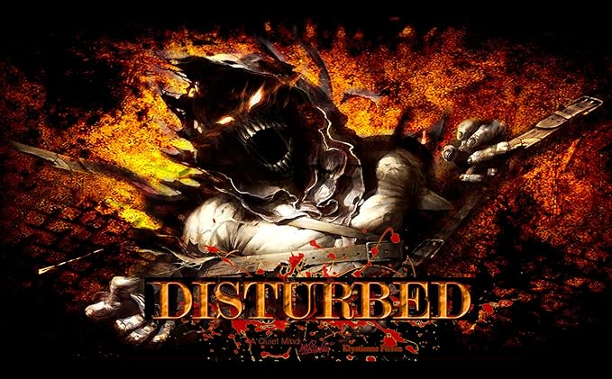

Disturbed
Welcome to the Sickness

https://www.amazon.com/Disturbed-Poster-American-Decor-Inches/dp/B00WZU5WT2
Disturbed began their reign in Chicago in 1994. Their current line up includes
guitarist Dan Donegan, drummer Mike Wengren, bassist John Moyer and Lead Vocalist
David Draiman. They released their first album "The Sickness" in 2000 and are still
active with their latest album "Divisive" which released in 2022.